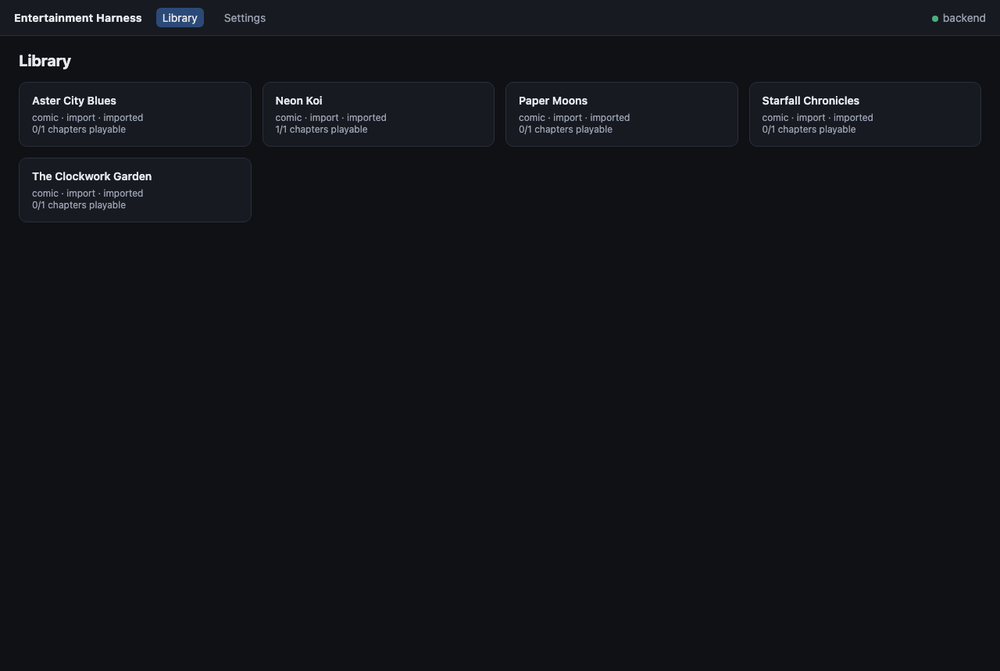
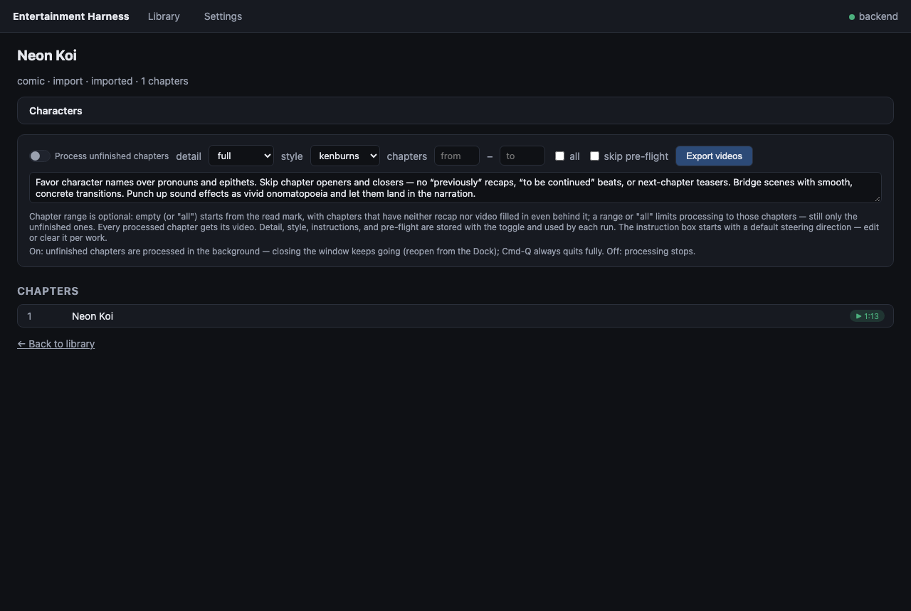
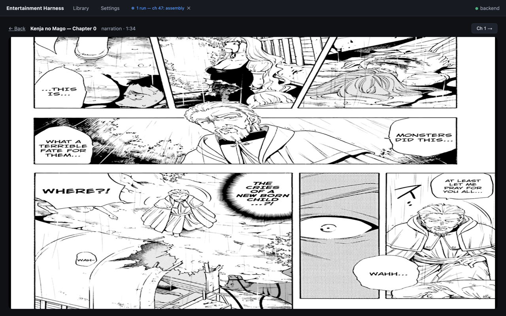

Local-first library
Works, read progress, recaps, and generated videos live in plain files and SQLite under your data dir. No account, no tracking.
// terragohan.systems — signal acquired
A local-first entertainment system.
Track manga and books from real sources, then turn chapters into narrated recap videos with local vision models — your library and artifacts never leave your machine unless you opt in.
// capabilities
Works, read progress, recaps, and generated videos live in plain files and SQLite under your data dir. No account, no tracking.
Search and sync from MangaDex and Weeb Central, or import your own CBZ/EPUB comics and books from files or URLs.
Ollama-hosted vision LLMs (Qwen3-VL by default) with hardware-aware quantization policy. OpenRouter / vLLM are opt-in.
Chapter recaps with rolling story context, Kokoro TTS narration, and Ken Burns motion over the real pages.
A guided storyboard pipeline: Runway keyframes from your panels, assembled into short 16:9 clips. Cached per stage.
A native macOS app (Apple silicon) over the eh serve API —
browse, watch, and export without touching the terminal.
// interface



// boot sequence
Requires Python ≥ 3.13 and ffmpeg. Everything runs from a clone of the repo; the desktop app is macOS-only.
git clone https://github.com/terragohan/entertainment-harness
cd entertainment-harness
uv sync
uv run eh add "One Piece" # search a source, add the series
uv run eh sync # fetch its chapter list
uv run eh recap "One Piece" --video --chapters 1
uv run eh play "One Piece" # watch the generated recap videoThe default model backend is Ollama; remote
backends like OpenRouter are configured in
~/.local/share/entertainment-harness/config.toml.
Full details in the docs.
// terms of transmission
Source-available under GPL-3.0 with the Commons Clause: free to use, study, modify, and redistribute with attribution; selling the software or offering it as a paid hosted service requires the licensor's permission. Because of that clause this is intentionally not OSI "open source".
Videos you generate are yours — but the source manga/books are copyrighted by their authors and publishers, so treat recap videos as personal media. See Using generated content in the README before uploading anything to sharing platforms.